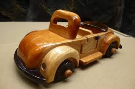

TUJUAN PEMBELAJARAN
•Menyatakan pendapat tentang keragaman karya kerajinan bahan keras sebagai ungkapan
rasa bangga sebagai wujud rasa syukur kepada tuhan dan bangsa.
•Memahami pengertian, sejarah, jenis, sifat, dari karakteristik kerajinan bahan keras
berdasarkan rasa ingin tahu dan peduli lingkungan.

KERAJINAN BAHAN KERAS
Kerajinan dari bahan keras merupakan produk kerajinan yang menggunakan bahan dasar
yang bersifat keras yaitu bersifat pejal, solid, kuat, padat dan tidak mudah berubah bentuk.
PRODUK KERAJINAN BAHAN KERAS
Bahan Alam
Bahan yang berasal
dari kekayaan alam yang ada di daratan dan lautan.
Bahan material
alam untuk kerajinan ini merupakan sumber daya alam yang berasal
dari hutan Indonesia.
BAHAN MATERIAL BUATAN
Kaleng berasal dari besi tipis yang dilapisi oleh timah. Sedangkan kaca berasal dari pasir silika
dan oksida serta material anorganik lainnya.